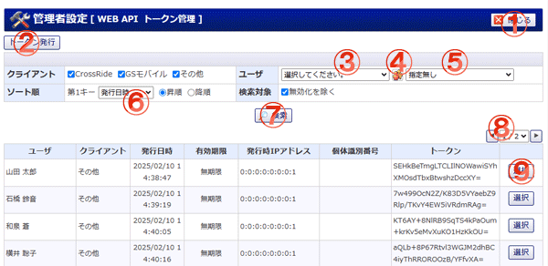

連携APIに登録するトークンを発行・選択します。

機能説明
閉じるボタンウィンドウを閉じます。 |
トークン発行ボタントークン発行ダイアログを表示します。ダイアログ内でトークン発行ボタンをクリックすると、連携APIに登録するトークンが発行され、ウィンドウが閉じます。 |
|---|---|
グループ選択コンボグループを選択します。 |
グループ選択アイコングループ選択ダイアログを表示します。 |
ユーザ選択コンボユーザを選択します。 |
第1キー選択コンボソートに使用する第1キーを選択します。 |
検索ボタン検索を実行します。 |
ページコンボ・前頁・次頁ページコンボで任意のページへ、前頁アイコンクリックで前のページへ、次頁アイコンクリックで次のページへそれぞれ遷移します。 |
選択ボタン連携APIに登録するトークンを選択し、ウィンドウを閉じます。 |